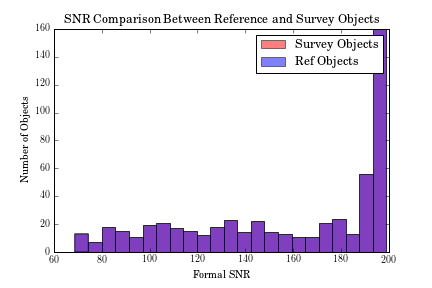
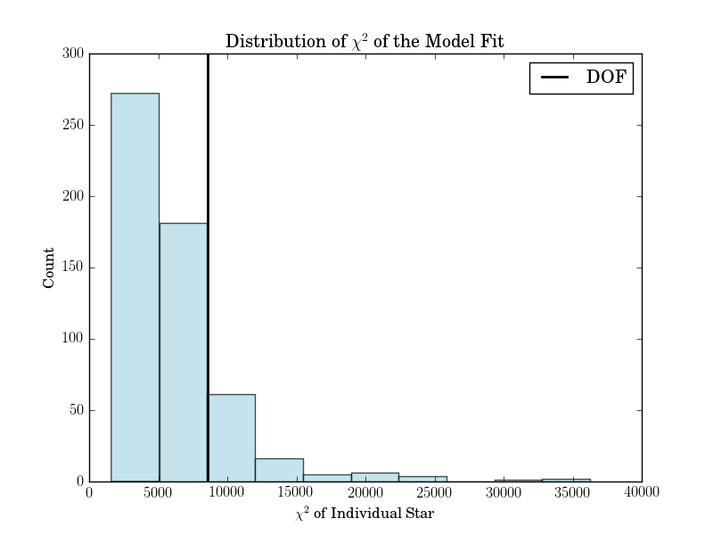
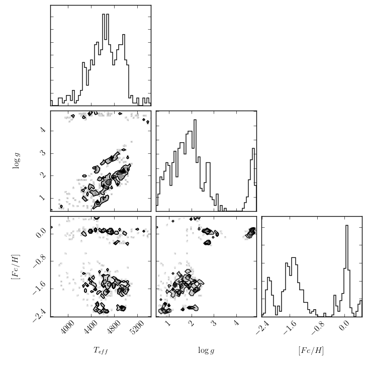

Getting Started¶
TheCannon can be installed using pip:
$ pip install TheCannon
Here is an overview of the basic workflow using a simple illustration with APOGEE DR10 data in which the test set is identical to the training set. To run this example, download the file example_DR10.tar.gz by clicking here and unzip it using the command
$ tar -zxvf example_DR10.tar.gz
This file contains the following:
- Data: a folder with .fits data files
- reference_labels.csv: a table with reference label values for the training step
- Results: a folder with all of the diagnostic output plots that TheCannon produces in this example
Before the data can be run through TheCannon, it must be prepared according to the specifications laid out in the “Requirements for Input” section. One of the requirements is for data to be continuum normalized in a SNR-independent way. TheCannon does have built-in options for continuum normalizing spectra, and we illustrate that here.
Here are the steps for reading in the data. In practice, the user would write his own code; for this example, we provide the module apogee.py. The procedure for reading in spectra and training labels of course depends on the survey, the file type, etc, and it is up to the user to package this all appropriately before feeding it into TheCannon.
>>> from TheCannon import apogee
>>> tr_ID, wl, tr_flux, tr_ivar = apogee.load_spectra("example_DR10/Data")
>>> all_labels = apogee.load_labels("example_DR10/reference_labels.csv")
There should be 548 spectra with 8575 pixels each.
For simplicity, we set the test set is set as equal to the training set, so that TheCannon is simply re-determining labels for the reference objects. In practice, the test IDs, fluxes, and inverse variances would be read in separately.
>>> test_ID = tr_ID
>>> test_flux = tr_flux
>>> test_ivar = tr_ivar
The reference_label.csv file contains more labels than we want to use; in this example, we only want effective temperature, metallicity, and surface gravity. The output from the apogee.load_labels step shows which column corresponds to which label, so we select them as follows:
>>> teff = all_labels[:,1]
>>> logg = all_labels[:,3]
>>> mh = all_labels[:,5]
and then repackage them to suit the requirements in “Requirements for Input:”
>>> import numpy as np
>>> tr_label = np.vstack((teff, logg, mh)).T
Now, all the input data has been packaged properly, and we can begin running TheCannon.
The first step is to initialize a Dataset object:
>>> from TheCannon import dataset
>>> dataset = dataset.Dataset(
>>> ...wl, tr_ID, tr_flux, tr_ivar, tr_label, test_ID, test_flux, test_ivar)
TheCannon has a number of optional diagnostic plots built-in, to help the user visualize the results. Some of these plots require knowing the names of the labels. If the user wants to produce these diagnostic plots, he or she must specify the label names in LaTeX format:
>>> dataset.set_label_names(['T_{eff}', '\log g', '[Fe/H]'])
At this stage, two diagnotic plots can already be produced, one with the distribution of SNR in the training and test set (in practice, the training set should consist of higher SNR spectra than the test set) and the other using triangle.py to plot every label’s set of training values against every other.
>>> dataset.diagnostics_SNR()
>>> dataset.diagnostics_ref_labels()
The output is saved to the directory that TheCannon is being run in. The first should be called SNRdist.png and look as follows:
The second should be called ref_labels_triangle.png and look as follows:

Again, TheCannon requires incoming spectra to be continuum normalized in a way that is independent of signal to noise. If the data does not satisfy this criteria already, the user can use the continuum identification and normalization functions built into TheCannon.
First, continuum pixels are identified from a pseudo-continuum normalized version of the training set spectra. Pseudo-continuum normalization is performed using a running quantile. In this case, the window size for calculating the median is set to 50 Angstroms and the quantile level is set to 90%. APOGEE spectra come in three chunks, and we want to perform continuum normalization for each chunk separately. For TheCannon to treat spectra in chunks, the ranges attribute must be set:
>>> dataset.ranges = [[371,3192], [3697,5997], [6461,8255]]
Even if a spectral dataset do not consist of chunks separated by gaps, one can imagine other reasons for wanting to treat a spectrum as though it had gaps: for example, if different regions of a spectrum behave very differently, it might be sensible to treat each of them separately in continuum normalization. The user should make sure to examine the results of continuum normalization, for example plotting fifty sample continuum fits and continuum normalized spectra.
Pseudo continuum normalization can then be performed as follows:
>>> pseudo_tr_flux, pseudo_tr_ivar = dataset.continuum_normalize_training_q(
>>> ...q=0.90, delta_lambda=50)
Once the pseudo continuum has been calculated, a continuum mask is created: True values correspond to pixels that are continuum, False to those that are not. “True” continuum pixels are identified using a median and variance flux cut across the training objects: in other words, continuum pixels are those that consistently have values close to 1 in all of the training spectra. The user specifies what fraction of pixels to identify as continuum, and the flux and variance cuts are determined appropriately. If the dataset.ranges attribute is set, then continuum pixels are identified separately for each region (in this case, three regions). This enables the user to control how evenly spread the pixels are.
In this case, we choose 7% of the pixels in the spectrum as continuum, but the best value should be determined through experimentation.
>>> contmask = dataset.make_contmask(
>>> ...pseudo_tr_flux, pseudo_tr_ivar, frac=0.07)
At this stage, the user should plot spectra overlaid with the identified continuum pixels to ensure that they look reasonable and that they roughly evenly cover the spectrum. Large gaps in continuum pixels could result in poor continuum normalization in those regions. If the continuum pixels do not look evenly sampled enough, the range can be changed and the process repeated. For this example, we change it as foollows:
>>> dataset.ranges = [[371,3192], [3697,5500], [5500,5997], [6461,8255]]
>>> contmask = dataset.make_contmask(
>>> ...pseudo_tr_flux, pseudo_tr_ivar, frac=0.07)
Once a satisfactory set of continuum pixels has been identified, the dataset’s continuum mask attribute is set as follows:
>>> dataset.set_continuum(contmask)
Once the dataset has a continuum mask, the continuum is fit for using either a sinusoid or chebyshev function. In this case, we use a sinusoid; the user can specify the desired order. Again, this is 3 for this simple illustration, but should be determined through experimentation.
>>> cont = dataset.fit_continuum(3, "sinusoid")
Once a satisfactory continuum has been fit, the normalized training and test spectra can be calculated:
>>> norm_tr_flux, norm_tr_ivar, norm_test_flux, norm_test_ivar = \
>>> dataset.continuum_normalize(cont)
If these normalized spectra look acceptable, then they can be set:
>>> dataset.tr_flux = norm_tr_flux
>>> dataset.tr_ivar = norm_tr_ivar
>>> dataset.test_flux = norm_test_flux
>>> dataset.test_ivar = norm_test_ivar
Now, the data munging is over and we’re ready to run TheCannon!
For the training step (fitting for the spectral model) all the user needs to specify is the desired polynomial order of the spectral model. In this case, we use a quadratic model: order = 2
>>> from TheCannon import model
>>> model = model.CannonModel(dataset, 2)
>>> model.fit()
equivalently,
>>> model.train()
At this stage, more optional diagnostic plots can be produced to examine the spectral model:
>>> model.diagnostics()
The first is a series of plots showing the full baseline (first-order) model spectrum with continuum pixels overplotted.

The second is a plot of the leading coefficients and scatter of the model as a function of wavelength

The third is a histogram of the reduced chi squareds of the model fit.
If the model fitting worked, then we can proceed to the test step. This command automatically updates the dataset with the fitted-for test labels, and returned the corresponding covariance matrix.
>>> label_errs = model.infer_labels(dataset)
A set of diagnostic output:
>>> dataset.diagnostics_test_step_flagstars()
>>> dataset.diagnostics_survey_labels()
The first generates one text file for each label, called flagged_stars.txt. The second generates a triangle plot of the survey (Cannon) labels, shown below.
If the test set is simply equivalent to the training set, as in this example, then one final diagnostic plot can be produced:
>>> dataset.diagnostics_1to1()